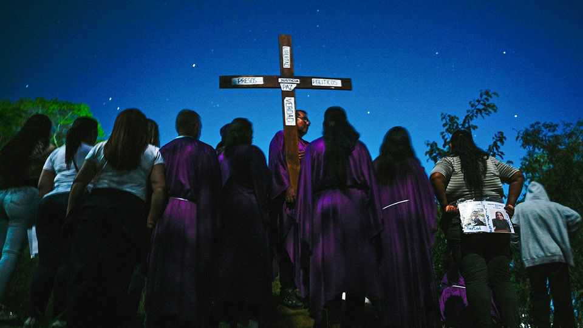

Why do political prisoners still languish in Venezuela’s jails?
America may see value in permitting it

Oct 15th 2026
RODEO IS A notorious prison near Caracas, Venezuela’s capital. In one of its towers, people who fell foul of the country’s grim regime are held in tiny cells with open latrines. The heat, smell and bugs are unbearable. Televisions play propaganda. And then there is the torture. Wilder Vásquez, 32, who was held there as a political prisoner for almost three years, says the director welcomed him to the prison with a taunt: “Only God can get you out of here.”
In the end, he was sprung by Donald Trump. It is nine months since America’s president dispatched special forces to snatch Nicolás Maduro, the former dictator—only to replace him with his deputy, Delcy Rodríguez. Mr Trump boasts of his control over Venezuela. Mr Vásquez is one of 1,104 political prisoners who have since been released. Yet there are still more than 300 languishing behind bars, many in Rodeo, according to Foro Penal, an NGO. Relatives of these inmates, some of them camping outside the prison gates, struggle to understand why.
The issue underlines tensions at the heart of the new relationship between the United States and Venezuela, says Phil Gunson, an analyst with Crisis Group, another NGO. The Trump administration has extraordinary leverage over Ms Rodríguez. Everyone knows that it could snatch her, just as it snatched her boss. The United States controls Venezuela’s oil exports, too. And yet it still depends on Ms Rodríguez’s regime to run Venezuela day-to-day. “The United States cannot simply remake Venezuela in the way we want overnight,” says Mr Gunson.
America’s priorities in Venezuela are business, stability and democracy—in that order. It does not want to repeat mistakes made in Iraq, where regime change led to civil war. So it has kept the chavistas in power. The regime has churned out economic reforms. But Ms Rodríguez may be arguing that too much political change, too quickly, risks derailing that process. “We are still in Delcy’s world,” says Alfredo Romero of Foro Penal.
Political prisoners are useful for the regime. They are not only chips for bartering with the Americans; their continued incarceration helps make clear to Venezuelans that the regime’s ability to quash dissent remains intact. Venezuelans have been less fearful since Mr Maduro was arrested. Protests are rising: August saw almost four times as many as in the same month last year. The regime needs to retain a degree of “social control”, says Andreína Baduel. Her late father, Raúl Baduel, died a political prisoner in 2021. Her brother Josnars is currently in Rodeo.
Some political prisoners have a specific jailer: a person with a grudge who needs to be convinced to release them. And almost half of those remaining have a military past. Many are senior officers accused of rebellion. Keeping them locked up is a way of controlling the armed forces, says John Polga-Hecimovich, an academic at the US Naval Academy in Maryland. The regime could be worrying that, if released, some of them might talk to United States prosecutors about the regime’s corruption and involvement in drug trafficking.
On October 8th the US indicted Mr Maduro and his wife, Cilia Flores, for using torture to hold power. Many prisoners tell stories of that. Ms Baduel says the ligaments in her brother’s knees and shoulders are broken. Squatting over the latrine in his cell is agony. Hiowanka Ávila, whose brother was arrested for alleged involvement in an attempt to assassinate Mr Maduro with a drone, says he was beaten, electrocuted and asphyxiated. He was put in stress positions and left hanging from his wrists for days. “And that was just the physical torture,” says Ms Ávila.
Conditions in Rodeo have improved since Mr Maduro was whisked away. Families have been allowed to embrace their relatives during visits. Each prisoner has been given a pillow. The violence against them has abated. The families who camp outside the prison still hope their loved ones will be released soon (a procession near the prison is pictured on the previous page). But they are anxious, too, that something might curtail the political transition. Says Ms Baduel: “This episode of horror for Venezuelans is not totally over yet.” ■